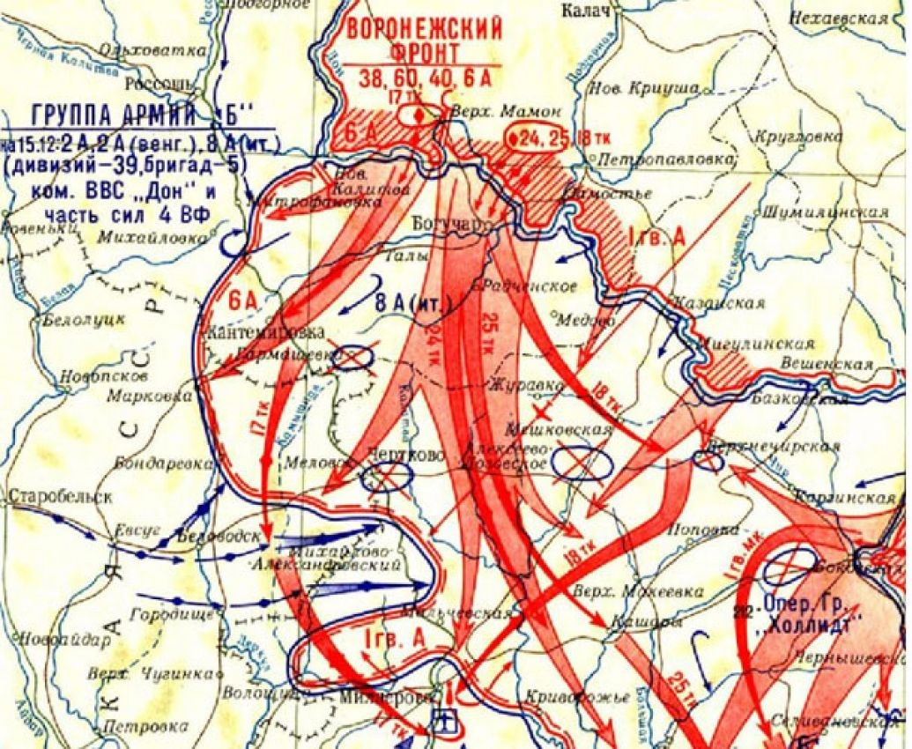

15-16 декабря 1942 года
Источник: «Волгоградская правда» от 15-16 декабря 1982 года.
ОТ СОВЕТСКОГО ИНФОРМБЮРО
Вечернее сообщение 15 декабря.
В районе Сталинграда был взят в плен экипаж сбитого немецкого транспортного самолета «Юнкерс-52». Пленный бортмеханик Альфред Сарнецкий заявил: «За последнее время немецкая транспортная авиация несет под Сталинградом огромные потери. Воздушный путь самолетов пролегает через зоны непрерывного огня. В создавшихся условиях каждый летчик, получивший боевое задание, считает, что он отправляется в последний рейс. Даже очень опытные пилоты с большой неохотой, я бы сказал, даже со страхом садятся в самолет. Некоторые перед вылетом заготавливают прощальные письма. Бывают дни, когда свыше половины всех самолетов, отправляющихся в полет, не возвращаются на свои базы».
Вечернее сообщение 16 декабря.
При занятии населенного пункта западнее Суровикино наши войска захватили 305 орудий разных калибров, около 1500 автомашин, два железнодорожных состава с военным имуществом, склады с боеприпасами, а также много другого военного снаряжения.
Юго-западнее Сталинграда, в районе Верхне-Кумского, в двухдневных боях наши войска разгромили прорвавшуюся в этот район группу войск противника и уничтожили 50 танков и полк мотопехоты 6-й танковой дивизии немцев.
Событие. Операция «Малый Сатурн».
Хроника Огненных дней.
А. Казарцев, генерал-полковник в отставке, Герой Советского Союза, бывший командир 87-й вспоминал: «Особенно упорные бои шли 15 декабря за Верхне-Кумский, занятый накануне фашистами. На помощь танкистам 4–го механизированного корпуса сюда прибыл 1378-й стрелковый полк подполковника Диасамидзе. Этому полку, как и 55-му танковому полку подполковника А. Асланова, выпала важнейшая роль в боях за Верхне-Кумский. А к исходу 15 декабря после тяжелых четырехдневных упорных боев войска 51-й Армии, нанеся значительный урон противнику, задержали его на реке Аксай. Стойкая оборона наших войск не допустила выхода противника к реке Мышкова и обеспечила развертывание на этом рубеже новых сил, шедших на помощь 2-й гвардейской армии.
16 декабря началась наступательная операция советских войск «Малый Сатурн» на Среднем Дону. Из-за густого тумана авиация не могла действовать. 16 декабря при занятии населенного пункта западнее Суровикино наши войска захватили 305 орудий разных калибров, около 1500 автомашин, два железнодорожных состава с военным имуществом, склады с боеприпасами, а также много другого военного снаряжения.
Юго-западнее Сталинграда, в районе Верхне-Кумского, в двухдневных боях наши войска разгромили прорвавшуюся в этот район группу войск противника и уничтожили 50 танков и полк мотопехоты 6-й танковой дивизии немцев.
16 декабря на участках Верхне-Кумский и Жутов-1-й. Выбитые накануне из Верхне-Кумского гитлеровцы бросили теперь в наступление батальон тяжелых танков «тигров». Но и это не помогло.
Командующий рвущейся на выручку окруженным войскам Ф. Паулюса Котельниковской группировки генерал Г. Гот понимал, какое огромное значение имеет время. Все расчеты он строил на полном использовании всех сил для прорыва нашей обороны до подхода подкреплений. Теперь, находясь всего в 50 километрах от цели, войска Г. Гота прилагали отчаянные усилия. Но время уже было упущено.
Начиналось наступление наших войск на Среднем Дону. Мощный артиллерийский огонь, в 8 часов утра обрушившийся на противника, предвещал развертывание новой операции советских войск «Малый Сатурн». Обстановка заставила несколько видоизменить этот план. Вместо наступления на юг, на Ростов, теперь наши войска наносили удар в юго-восточном направлении, в тыл деблокирующей группировки.
Активные боевые действия противник возобновил лишь со второй половины дня 17 декабря. Но ожесточенные бои разгорелись в последующие два дня. Танковые атаки врага следовали одна за другой. Однако советские войска не дрогнули, в борьбе с немецко-фашистскими захватчиками показали беспримерную стойкость.
В стане врага.
Министр иностранных дел Италии граф Чиано в своем дневнике записал, что борьба против Советского Союза не только не имеет перспектив на победу, но более того, после Сталинграда некоторые представители влиятельных кругов Италии, в том числе и Б. Муссолини, считают, что война проиграна и необходимо искать пути для выхода из нее.
Коротко.
Километр за километром восстанавливают железнодорожные войска рельсовый путь в местах освобождения Красной Армией от немцев в районе Сталинграда. На ряде участков уже возобновилось движение поездов, доставляющих вооружение и припасы.
… В железнодорожном полотне находились немецкие дзоты и землянки. Землю густо усеяли глубокие воронки от разрывов бомб и снарядов. Здесь нельзя было найти ни одной целой шпалы, ни одного рельса. За короткий срок бойцы железнодорожных войск уложили на этом участке 20 тыс. шпал. 33 тонны различных скреплений, 5 километров рельсового пути.
Карта
